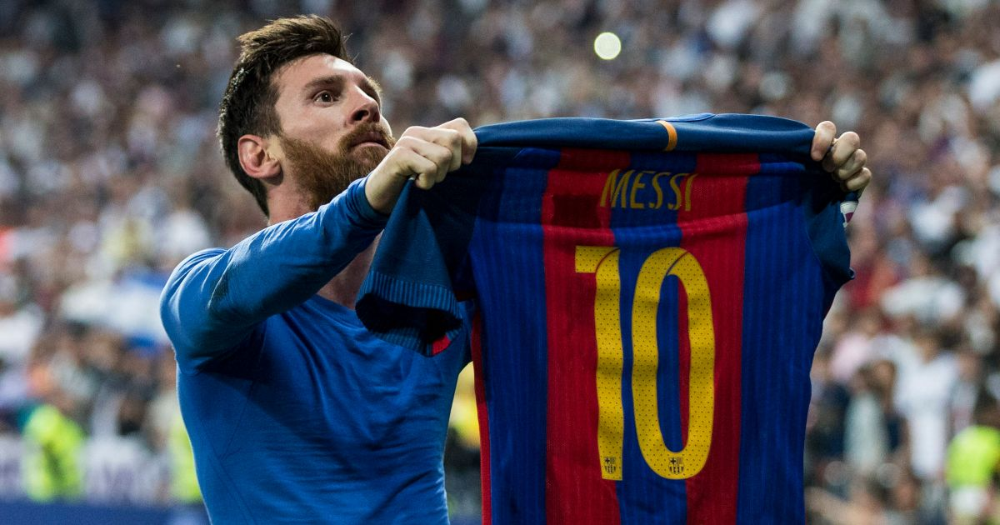

El Fútbol Club Barcelona (en catalán: Futbol Club Barcelona), conocido popularmente como Barça, es una entidad polideportiva con sede en Barcelona, Cataluña, España. Fue fundado como club de fútbol el 29 de noviembre de 1899 y registrado oficialmente el 5 de enero de 1903.
Tanto el club como sus hinchas reciben el apelativo de «culers» (pronunciado culés),10 y también, en referencia a sus colores, «azulgranas» o «blaugranas», tal como aparece en su himno, el «cant del Barça», el cual en su segunda línea menciona «som la gent blaugrana» (en castellano, «somos la gente azulgrana»). En su oficina de atención al barcelonista se atiende en los tres idiomas oficiales del club, que son el catalán, el castellano y el inglés.
Actualmente disputa la 1º división del fútbol español, en LaLiga EA SPORTS y mantiene una gran rivalidad con el Real Madrid C.F.
La década de los años 1990 fue una de las mejores décadas de la historia del Fútbol Club Barcelona. Fueron diez años de éxitos para el club en todos los órdenes, tanto en el terreno futbolístico como en las secciones deportivas.
El equipo de fútbol, entrenado por Johan Cruyff, y con jugadores como Koeman, Guardiola, Amor, Stoichkov, Romário, Laudrup, Zubizarreta o Bakero ganó cuatro Ligas consecutivas entre 1991 y 1994, una Copa, tres Supercopas de España, una Recopa de Europa y una Supercopa de Europa; y el 20 de mayo de 1992 conquistó el título más preciado del club: la Copa de Europa, en el estadio de Wembley, ante la Sampdoria italiana con anotación de Koeman.
Durante estos años, el equipo desempeñó un gran juego y fue conocido popularmente con el nombre de «Dream Team», imitando la terminología que se usó con la Selección de baloncesto de Estados Unidos en los Juegos Olímpicos de Barcelona 1992.
Cuando Cruyff fue despedido por diversos motivos, el club entró en una gran crisis, con escasez de títulos y de buen fútbol.

Con la llegada de Pep Guardiola al mando del equipo, el Barcelona pasó a la historia en la temporada 2008-09 tras conseguir el «triplete» conquistando la Liga, la Copa y la Liga de Campeones. Fue gracias al triunfo en la final de Roma ante el Manchester United por 2-0 que el «Pep Team» consiguió el triplete, convirtiéndose en el primer y único equipo español en haber logrado tal hazaña. El equipo de Pep Guardiola, además de alzarse con los tres principales títulos, logró superar las hazañas del «Dream Team» en cuanto a cifras conseguidas en Liga, batiendo varios récords de goles, partidos ganados como visitante, etc.
Al inicio de la temporada 2009-10, el equipo ganó la Supercopa de España al imponerse al Athletic Club en ambos partidos. También logró la Supercopa de Europa al vencer al Shajtar Donetsk por 1-0. El equipo dirigido por Josep Guardiola, tras conquistar la Copa Mundial de Clubes ante Estudiantes de La Plata por 2-1, pasó definitivamente a la historia del fútbol mundial, al conseguir los seis títulos oficiales en un mismo año, una hazaña que no había sido lograda nunca antes por ningún otro club. El Barcelona de Guardiola consiguió en mayo de 2010 su segunda Liga consecutiva, con un total de 99 puntos, cifra que ningún otro club había alcanzado antes.
El 10 de enero de 2011, el podio del Balón de Oro del 2010 fue completamente blaugrana: Leo Messi (segundo balón de oro de los siete que ha obtenido), Andrés Iniesta y Xavi Hernández recibían el reconocimiento de todo el mundo del fútbol como los tres mejores jugadores del año anterior. Un reconocimiento, no solo a los tres futbolistas sino también a La Masía, pues los tres se habían formado en el cantera del Barcelona.
El 11 de julio de 2010, la selección española ganó la final de la Copa Mundial alineando a siete jugadores del Barcelona en el equipo titular, seis de ellos formados en La Masía. En la temporada 2012-13 Guardiola abandonó el banquillo, y fue sustituido por Tito Villanova.
Desde la marcha de Pep, el Barcelona solo volió a ganar una copa de Europa: la de la temporada 2014-15, en la que ganaron el triplete con Luis Enrique, liderados por la "MSN", la delantera conformada por Messi, Luis Suárez y Neymar respectivamente. No lograron el sextete.
Tras ese triplete, el club ha entrado en una época de decadencia: no han vuelto a ganar una Champions League y además la mayoría de los resultados han sido vergonzosos. En la edición 2015-16, fueron eliminados por el Atlético de Madrid en cuartos; en la 2016-17, humillados en Turín 3-0 por la Juventus en la semifinal; en 2017-18, tras ganar contundentemente en casa, el AS Roma les venció de forma humillante (3-0) eliminándoles de cuartos, en la 2018-19, tras una de las mejores actuaciones individuales de la historia en una competición, de Leo Messi, fueron eliminados 4-0 en Anfield frente al Liverpool en semifinal; en la 2019-20 el Bayern de Múnich les metió 8 goles, expulsándoles en cuartos (2-8); en la 2020-21, en octavos frente al PSG; y finalmente en 2021-22 y 2022-23, eliminados en fase de grupos, por culpa del Bayern.
Parece que el club no levanta cabeza tras estas duras eliminaciones, ya que ha habido escasez de títulos en general, pero están entrando en una "nueva era", con incluso una serie en Amazon Prime con el mismo título que trata su actual decadencia y su nueva era ganadora. Ganaron la pasada liga (2022-23) y parece que por fin han sabido reponerse tras la marcha de Messi, Suárez, Neymar, Iniesta, Piqué, etc., y han logrado conformar un buen equipo basado en los jóvenes y nuevos referentes como Robert Lewandowski o Joao Cancelo. Actualmente están clasificados para los octavos de final de la Champions League 2023-24 y están compitiendo por el título de liga y por la Copa del Rey. Se espera una temporada ilusionante

Lionel Andrés Messi Cuccittini (Rosario, 24 de junio de 1987), conocido como Leo Messi, es un futbolista argentino que juega como delantero o centrocampista. Desde 2023, integra el plantel del Inter Miami de la MLS estadounidense. Es también internacional con la selección de Argentina, de la que es capitán.
A los 13 años se radicó en España, donde el Barcelona accedió a pagar el tratamiento de la enfermedad hormonal que le habían diagnosticado de niño. Después de una rápida progresión por la Academia juvenil del Barcelona, hizo su debut oficial con el primer equipo en octubre de 2004, a los diecisiete años. A partir de ahí pasó a ser titular indiscutible e hizo historia.
Con el Fútbol Club Barcelona, al que estuvo ligado más de veinte años, ganó 35 títulos, entre ellos, diez de La Liga, cuatro de la Liga de Campeones de la UEFA y siete de la Copa del Rey.
Considerado con frecuencia el mejor jugador del mundo y uno de los mejores de todos los tiempos, es el único futbolista en la historia que ha ganado, entre otras distinciones, siete veces el Balón de Oro, siete premios de la FIFA al mejor jugador del mundo, seis Botas de Oro y dos Balones de Oro de la Copa Mundial de Fútbol. En 2020, se convirtió en el primer futbolista y el primer argentino en recibir un premio Laureus y fue incluido en el Dream Team del Balón de Oro.
Xavier Hernández Creus (Tarrasa, Barcelona, 25 de enero de 1980), conocido simplemente como Xavi, es un exfutbolista y entrenador español. Actualmente dirige al F. C. Barcelona de la Primera División de España. Ha ganado 32 trofeos en su carrera, lo que lo convierte en el tercer jugador español más laureado de la historia.
Formado desde categoría alevín en la cantera del Barcelona, jugaba como mediocentro organizador. Debutó en 1998 con el primer equipo azulgrana en la Primera División, con el que disputó 17 temporadas (1998–2015), logrando 25 títulos como barcelonista, entre los cuales se incluyen 8 títulos de La Liga, 6 Supercopas de España, 4 Copas del Rey, 4 Ligas de Campeones, 2 Supercopas de Europa y 2 Mundiales de Clubes.3 En total, disputó 767 partidos oficiales, y anotó 85 goles, siendo el segundo jugador con más presencias en el cuadro blaugrana, por detrás de Lionel Messi. En 2015, se fue de Barcelona a Al Sadd, donde ganó cuatro trofeos antes de retirarse en 2019. Es uno de los pocos jugadores registrados que ha hecho más de 1000 apariciones en su carrera profesional.
Ronaldo de Assis Moreira (Porto Alegre, 21 de marzo de 1980), conocido como Ronaldinho Gaúcho, es un exfutbolista brasileño nacionalizado español que se desempeñaba como centrocampista o delantero. Es mundialmente reconocido como uno de los talentos más grandes en la historia de dicho deporte.
Destacó por su gran técnica, habilidad y calidad a la hora de controlar el balón, por la precisión en sus pases y tiros libres, así como por sus regates. Era conocido por improvisar jugadas, entre ellas la «elástica», la «vaselina o sombrero», el «autopase», la «bicicleta», la «cola de vaca» o la «espaldinha».
Ronaldinho inicio su carrera con Grêmio en 1998. En el año 2000, a los 20 años, se mudó al Paris Saint-Germain en Francia antes de fichar por el Barcelona en 2003. En su segunda temporada con el Barcelona, ganó el título de La Liga 2004-05 y la Supercopa Española. La temporada que siguió se considera una de las mejores de su carrera, ya que fue una pieza fundamental para que el Barcelona ganara la UEFA Champions League 2005-06, revalidar el título de La Liga y ganar nuevamente la Supercopa de España, lo que le dio a Ronaldinho el primer doblete de su carrera. Después de un segundo puesto en La Liga ante el Real Madrid en la temporada 2006-07 y una temporada 2007-08 plagada de lesiones, Ronaldinho sufrió un declive en sus actuaciones, a menudo atribuido a una disminución en la dedicación y el enfoque después de haber logrado tanto en el deporte, y en el verano europeo del 2008 partió de Barcelona para unirse al AC Milan, donde ganó la Serie A 2010-11.

¡Aquí encontrarás todos los trofeos ganados en la historia del club culé!
1991-92, 2005-06, 2008-09, 2010-11, 2014-15
2009-10, 2011-12, 2015-16
1978-79, 1981-82, 1988-89, 1996-97
1957-58, 1959-60, 1965-66 (ganada en propiedad el año 1971)
1992-93, 1997-98, 2009-10, 2011-12, 2015-16
1948-49, 1951-52
1909-10, 1910-11, 1911-12, 1912-13
1928-29, 1944-45, 1947-48, 1948-49, 1951-52, 1952-53, 1958-59, 1959-60, 1973-74, 1984-85, 1990-91, 1991-92, 1992-93, 1993-94, 1997-98, 1998-99, 2004-05, 2005-06, 2008-09, 2009-10, 2010-11, 2012-13, 2014-15, 2015-16, 2017-18, 2018-19, 2022-23
1909-10, 1911-12, 1912-13, 1919-20, 1921-22, 1924-25, 1925-26, 1927-28, 1941-42, 1950-51, 1951-52, 1952-53, 1956-57, 1958-59, 1962-63, 1967-68, 1970-71, 1977-78, 1980-81, 1982-83, 1987-88, 1989-90, 1996-97, 1997-98, 2008-09, 2011-12, 2014-15, 2015-16, 2016-17, 2017-18, 2020-21
1983-84, 1991-92, 1992-93, 1994-95, 1996-97, 2005-06, 2006-07, 2009-10, 2010-11, 2011-12, 2013-14, 2016-17, 2018-19, 2022-23
1982-83, 1985-86
1937
1937-38
1901-1902, 1902-03, 1904-05, 1908-09, 1909-10, 1910-11, 1912-13, 1915-16, 1918-19, 1919-20, 1920-21, 1921-22, 1923-24, 1924-25, 1925-26, 1926-27, 1927-28, 1929-30, 1930-31, 1931-32, 1934-35, 1935-36, 1937-38 (incluye la Copa Macaya (1901-02) y la Copa Barcelona (1902-03)
2014-15, 2017-18
1990-91, 1992-93, 1999-00, 2003-04, 2004-05, 2006-07, 2012-13, 2013-14 (hasta 1993-94, Copa Generalitat)
1948-49, 1951-52, 1952-53
¡Aquí encontrarás todos las curiosidades del Barcelona!
Bautizado como el Dream Team del fútbol europeo, fue un equipo con nombres inolvidables, nombres que han hecho historia: Zubizarreta, Bakero, Begiristain, Laudrup, Koeman, Stoichkov, Romario, Eusebio, Nadal, Guardiola, Amor, Juan Carlos, Ferrer, Nando, Julio Salinas, Serna, Alexanco y Goikoetxea.
El FC Barcelona consiguió encarrilar cuatro campeonatos de Liga consecutivos entre 1990 y 1994. La conquista de la Copa de Europa en 1992 marcó el punto culminante de esta etapa, recordada por el juego de toque, el afán ofensivo y el espíritu ganador de los jugadores de Cruyff.
Era habitual que muchos seguidores se sentaran en los muros que rodeaban al terreno de juego del Barça sobre entre 1922 y 1957. Desde fuera, lo que veían la gente eran las posaderas de los aficionados, por lo que empezaron a ser conocidos como “culers”, es decir, los que enseñan el culo. La pronunciación es culés, nombre que terminó perdurando en el tiempo hasta hoy, siendo el mote de la afición blaugrana.
Es una serie que trata sobre la actualidad del Barça y su “nueva era” tras la decadencia que lleva experimentando desde 2015. En la serie tratan la etapa de Koeman, la salida de Suárez, Messi, la llegada de Xavi al banquillo culé…
Cuenta con 2 temporadas y una 3ª en camino, disponible en Amazon Prime, que está basada en las temporadas 2021-22 y 2022-23 respectivamente.
La Masia es la cantera del Barcelona. Es una construcción que se caracteriza por su funcionalidad, la comodidad para sus residentes y por ser un edificio con capacidad de crecimiento en función de las necesidades del Club. Cuenta con unas instalaciones pensadas exclusivamente para optimizar la formación intelectual, personal y social de los deportistas. De aquí han salido jugadores como Messi, Xavi, Puyol, Monchu…
El 14 de diciembre del año 2000, Leo Messi aceptó su primera oferta para jugar profesionalmente al fútbol. Y la propuesta la firmó en una servilleta, a la edad de 12 años, durante un almuerzo informal en un bar de la capital catalana, en España. Sería el primer paso para convertirlo oficialmente en jugador del Fútbol Club Barcelona.
El FC Barcelona lucía inicialmente el escudo de la ciudad, evidenciando la total identificación del equipo con su lugar de origen. Sin embargo, a medida que el club fue creciendo, surgió la necesidad de crear un emblema propio, de forma que en 1910 se convocó un concurso para buscar ideas.
El ganador del certamen fue un socio llamado Santiago Femenia. Su escudo -que combinaba los colores del club con símbolos de Barcelona y Cataluña– fue aceptado rápidamente por los aficionados y ha mantenido su vigencia a lo largo de los años gracias a una serie de sutiles modificaciones.
Este apodo perteneció a Josep Samitier, un delantero que lideró en los años veinte la transformación del FC Barcelona en un fenómeno de masas. Lo llamaban así por sus remates acrobáticos, con los que deleitó a la afición durante los 232 partidos oficiales que jugó en el club de fútbol. Su capacidad para marcar goles en las situaciones más inverosímiles le valió el respeto de los rivales y la admiración incondicional de los seguidores culés, que incluso le perdonaron su marcha al Real Madrid en 1933.
La construcción de un nuevo estadio ya era una demanda de muchos seguidores a finales de los años cuarenta, así que en 1950 el FC Barcelona adquirió un terreno situado en la frontera de Barcelona y su municipio vecino, L’Hospitalet de Llobregat.
Una vez definidos los planos, en 1955 comenzaron las obras, que finalizaron en 1957. Considerado uno de los estadios de fútbol más modernos de su época, el Camp Nou permitió atender las nuevas necesidades de un club que estaba experimentando un crecimiento espectacular.
Páginas usadas para la creación de la página web y páginas oficiales del club: